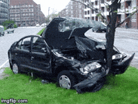

Focus: Variabele passieve constructies
Foutieve passieve constructie:
Uw actieve PV-tekst (Ik [werkwoord] dat...):
U bent nu bedreven in het omzetten van diverse passieve waarnemingen naar actieve taal.